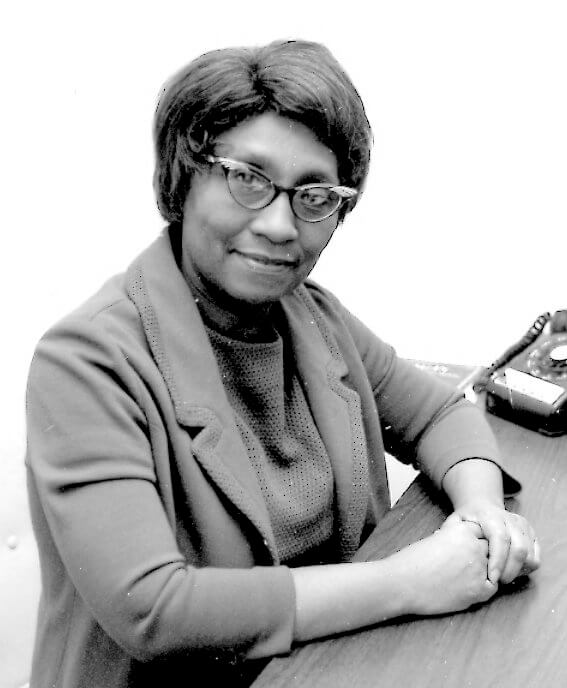

Helen Octavia Dickens

Helen Octavia Dickens (1909–2001) foi uma médica e professora americana, pioneira na área de obstetrícia e ginecologia, reconhecida por suas contribuições significativas à saúde das mulheres afro-americanas.
Educação e Formação
- Formou-se na Universidade de Illinois em 1934, sendo a única mulher afro-americana em uma turma de 137 alunos.
- Completou residência em obstetrícia no Provident Hospital, em Chicago.
- Associou-se à Dra. Virginia Alexander em uma prática obstétrica domiciliar na Filadélfia.
Conquistas e Contribuições
- Primeira afro-americana no American College of Surgeons: Em 1950, tornou-se a primeira mulher negra a ser admitida como Fellow no American College of Surgeons.
- Professora e Administradora na Universidade da Pensilvânia: Primeira mulher negra a ser professora na Escola de Medicina da Universidade da Pensilvânia, onde também serviu como decana associada de admissões minoritárias.
- Defensora da Saúde das Mulheres: Criou uma clínica para jovens mães e implementou programas de prevenção do câncer para a comunidade afro-americana.
Legado e Reconhecimento
- Quebrou barreiras raciais e de gênero na medicina, sendo uma das primeiras médicas afro-americanas a ocupar cargos de liderança acadêmica.
- Inspirou futuras gerações de médicas negras a ingressarem e se destacarem na profissão.
- Seu trabalho no atendimento de mulheres afro-americanas ajudou a reduzir disparidades na saúde.
Saiba mais